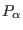
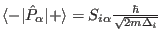
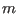
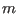
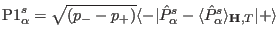

Next: External module function chargedensity_coeff Up: Module Functions for Observables Previous: External module function pcalc Contents Index
In order to calculate neutron intensities for phonon scattering
the external single ion module has to provide the transition matrix elements of
the phonon displacement  in units of Å, which for the transition i (=1,2,3)
is usually given by:
,
with  for the different spatial directions and  is the mass of the
oscillating atom (compare section 11).
for the different spatial directions and  is the mass of the
oscillating atom (compare section 11).
Note, that in this expression the sum over the different equally spaced phonon levels (of the harmonic oscillator) in the single ion susceptibility is already done. If the levels are not equally spaced, such as by interaction with other degrees of freedom, one has to take into account each transition separately by the expression .
The format to be used is:
extern "C" int dP1(int & tn,double & T,Vector & Hxc,Vector & Hext,double * g_J,Vector & MODPAR, char ** sipffilename,ComplexVector & p1,float & maxE, ComplexMatrix & est)
The meaning of the symbols is as follows:
on input
|tn| transition-number
sign(tn) >0 standard, <0 routine should do some printout to stdout for user information
MODPAR Vector with Parameters read in single ion property file
sipffilename file name of the single ion parameter file
g_J Lande factor
T Temperature[K]
Hxc vector of exchange field [meV] (can be n-dimensional, for a set of n operators)
Hext external magnetic field [T]
est eigenstate matrix (initialized by estates)
it should/may also contain population numbers of the states
(imaginary part of row 0)
and eigenvalues (real part of row 0) with values set by the most recent call
for this ion (use of this matrix is optional)
u1(1) ninit + i pinit (from mcdisp options -ninit and -pinit)
maxE upper boundary for transition energy (meV) to be considered
(from mcdisp option -maxE)
on output
int total number of transitions (normally =3 for the unperturbed
atomic Einstein oscillator in three
independent spatial directions, but may be larger if
coupling of phonons to other degrees of freedom such as CEF
is treated on a quantum mechanical level in the module)
P1 transition matrix element vector of the phonon displacement
for an Einstein oscillator p1=hbar/sqrt(2m hbar Delta),
or more general if phonon levels are not equally spaced:
P1=<-|P-<P>|+>sqrt((p- - p+))
The module function must perform the following tasks: